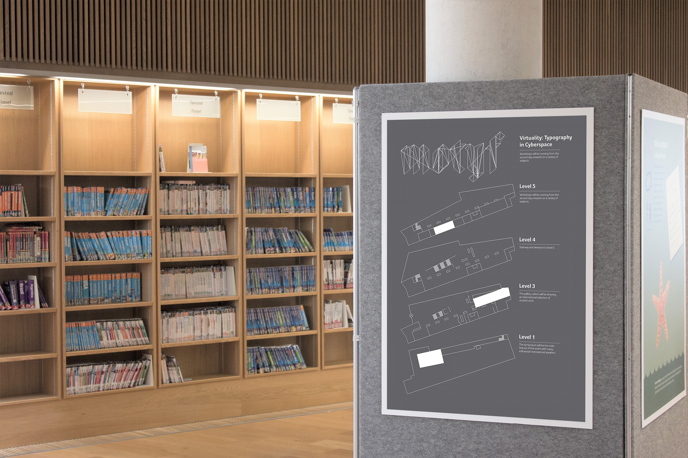
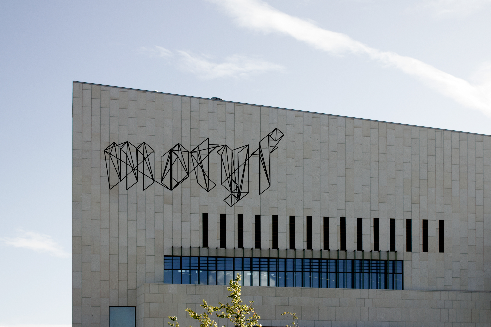
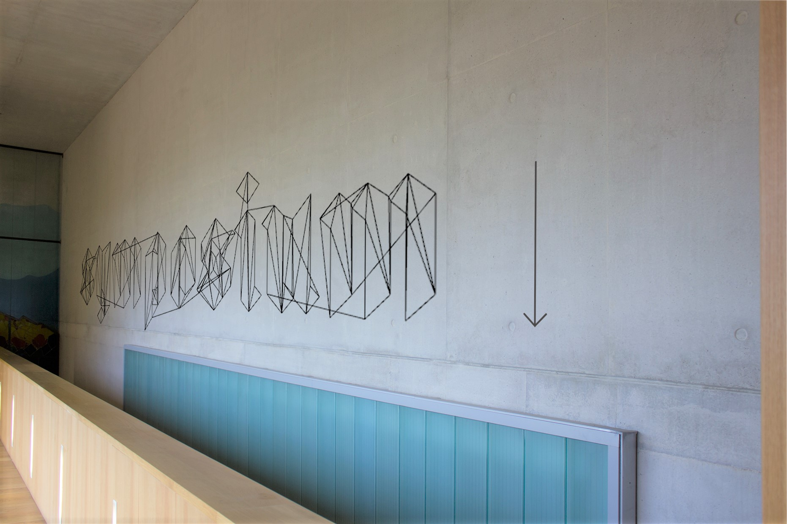
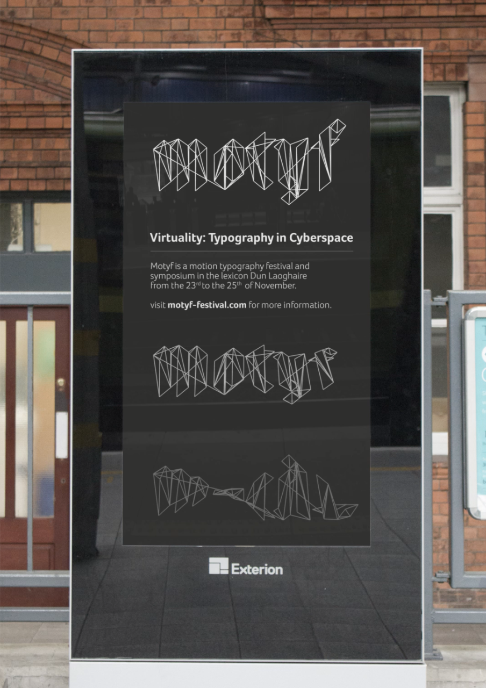

Motyf is a typographic festival celebrating and displaying work that will push the medium of typography forward. The title of the 2018 event is "Virtuality: Typography in Cyberspace". The event is high tech so I wanted that to be reflected in the space through the use of generative art/typography and projection to create an impactful and forward looking design for the event.



The core of this identity is the 3d wire-framed text, It makes.Advertisement and wayfinding were a large part of this project, so finding and exploiting different methods of public advertisement was essential, from the building masthead to digital signs in the city.


